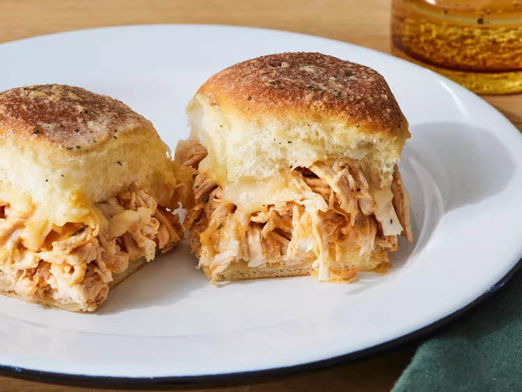

Home
Buffalo Chicken Sliders

Description
These Buffalo chicken sliders, made with shredded chicken
tossed in spicy Buffalo sauce, and baked on Hawaiian sweet
rolls with plenty of melty cheese are perfect for a game day
crowd or a quick and easy family dinner.
Ingredients
- Hawaiian sweet dinner rolls: Like so many delicious slider recipes, these mini sandwiches start with a package of Hawaiian sweet dinner rolls.
- Cheese: Shredded Monterey Jack cheese lends creaminess and bold flavor.
- Chicken: This is a great way to use leftover cooked chicken breast.
- Hot sauce: Heat things up with cayenne pepper hot sauce, such as Frank’s.
- Ranch dressing: Use store-bought ranch dressing or make your own at home.
- Ranch mix: Use store-bought dry ranch mix or make your own at home.
- Butter: Brush the sliders with melted butter before cooking.
Steps
- Cut the rolls in half horizontally, place the bottom half on a baking sheet, and sprinkle with cheese.
- Stir together the chicken, hot sauce, ranch, and some of the ranch dressing mix.
- Spread the chicken mixture over the bottom half, then top with the remaining cheese.
- Place the top half over the chicken and brush the rolls with butter. Sprinkle the tops of the rolls with the remaining dry ranch mix.
- Bake until the cheese is melted and the tops are golden brown.